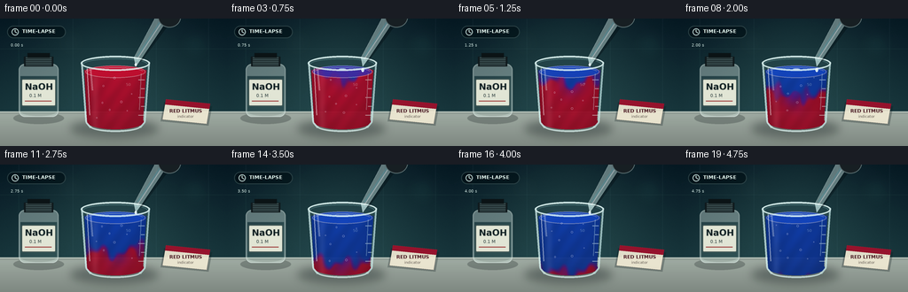
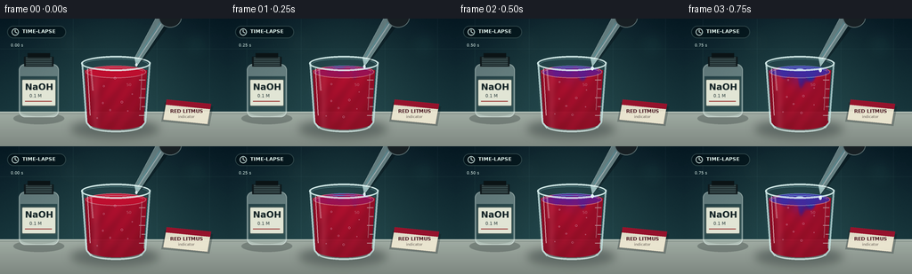

CODING AGENTS AS PIXEL WORLD MODELS
traex/GPT-5.6-Sol · material_0031
点击播放 · 原生 RGB 像素
逐轮保存的候选
回放视频、检查图与代码变化。
每份候选均可单独播放。实际图片检查记录在下方工具轨迹中。
候选 01播放与检查图
点击播放 · 原生 RGB 像素

展开代码变化
--- 上一保存版本
+++ 本次保存版本
@@ -0,0 +1,232 @@
+from pathlib import Path
+import math
+import numpy as np
+from PIL import Image, ImageDraw, ImageFont, ImageFilter
+import artifact_io
+
+W,H,N = 256,144,20
+S=4
+SW,SH=W*S,H*S
+ROOT=Path(__file__).resolve().parent
+rng=np.random.default_rng(31)
+
+FONT='/usr/share/fonts/truetype/dejavu/DejaVuSans.ttf'
+FONT_B='/usr/share/fonts/truetype/dejavu/DejaVuSans-Bold.ttf'
+def font(sz,bold=False):
+ return ImageFont.truetype(FONT_B if bold else FONT, sz*S)
+def scbox(b): return tuple(int(round(v*S)) for v in b)
+def pts(arr): return [(int(x*S),int(y*S)) for x,y in arr]
+def smooth(a,b,x):
+ z=np.clip((x-a)/(b-a),0,1); return z*z*(3-2*z)
+
+def gradient_base():
+ y=np.linspace(0,1,SH)[:,None]
+ x=np.linspace(-1,1,SW)[None,:]
+ glow=np.exp(-((x/0.74)**2 + ((y-.44)/.72)**2))
+ top=np.array([8,25,35.],float); bot=np.array([31,63,68.],float)
+ arr=top[None,None,:]*(1-y[:,:,None])+bot[None,None,:]*y[:,:,None]
+ arr=np.broadcast_to(arr,(SH,SW,3)).copy()
+ arr += glow[:,:,None]*np.array([17,25,21.])
+ # slight deterministic fine film grain
+ grain=rng.normal(0,1.0,(SH,SW,1))
+ arr += grain
+ return Image.fromarray(np.uint8(np.clip(arr,0,255)),'RGB')
+BASE=gradient_base()
+
+def draw_lab_background(im):
+ d=ImageDraw.Draw(im,'RGBA')
+ # subtle wall seams and reflected vertical laboratory panels
+ for xx in (21,82,176,235):
+ d.line([(xx*S,0),(xx*S,104*S)],fill=(115,166,166,12),width=S)
+ d.line([(0,34*S),(SW,34*S)],fill=(135,186,181,10),width=S)
+ # soft out-of-focus highlights
+ glow=Image.new('RGBA',(SW,SH),(0,0,0,0)); gd=ImageDraw.Draw(glow,'RGBA')
+ gd.ellipse(scbox((205,14,236,45)),fill=(104,204,187,18))
+ gd.ellipse(scbox((67,14,94,41)),fill=(158,218,202,10))
+ glow=glow.filter(ImageFilter.GaussianBlur(9*S)); im.paste(glow,(0,0),glow)
+ d=ImageDraw.Draw(im,'RGBA')
+ # bench rear line and tabletop
+ d.rectangle(scbox((0,105,256,144)),fill=(158,168,158,255))
+ # tabletop smooth gradient strips
+ for yy in range(105*S,SH):
+ u=(yy/S-105)/39
+ col=(int(160-34*u),int(171-35*u),int(163-34*u),255)
+ d.line([(0,yy),(SW,yy)],fill=col,width=1)
+ d.line([(0,105*S),(SW,105*S)],fill=(214,224,215,130),width=S)
+ d.line([(0,107*S),(SW,107*S)],fill=(38,59,59,45),width=S)
+
+
+def bottle_layer(im):
+ # Sodium hydroxide reagent bottle, softly behind the main glass
+ sh=Image.new('RGBA',(SW,SH),(0,0,0,0)); sd=ImageDraw.Draw(sh,'RGBA')
+ sd.ellipse(scbox((15,106,72,119)),fill=(15,25,26,65))
+ sd.rounded_rectangle(scbox((21,51,66,111)),radius=7*S,fill=(205,224,218,105),outline=(232,248,242,145),width=S)
+ sd.rectangle(scbox((27,43,60,54)),fill=(20,30,33,255))
+ for y in range(44,53,2): sd.line(pts([(29,y),(58,y)]),fill=(102,119,117,150),width=1*S)
+ sd.rectangle(scbox((31,39,56,44)),fill=(15,23,25,255))
+ # clear liquid horizon
+ sd.rectangle(scbox((23,65,64,106)),fill=(196,229,218,25))
+ sd.ellipse(scbox((23,99,64,110)),fill=(180,220,207,30))
+ # label shadow and paper
+ sd.rounded_rectangle(scbox((24,68,63,99)),radius=2*S,fill=(236,238,221,238),outline=(65,82,78,180),width=S)
+ sd.text((28*S,71*S),'NaOH',font=font(10,True),fill=(18,35,38,255),stroke_width=0)
+ sd.text((33*S,84*S),'0.1 M',font=font(5,False),fill=(40,57,57,255))
+ sd.line(pts([(28,93),(58,93)]),fill=(183,62,59,210),width=S)
+ sh=sh.filter(ImageFilter.GaussianBlur(.18*S)); im.paste(sh,(0,0),sh)
+
+
+def card_layer(im):
+ # package on bench reinforces that the solution is red litmus
+ sh=Image.new('RGBA',(SW,SH),(0,0,0,0)); d=ImageDraw.Draw(sh,'RGBA')
+ poly=pts([(187,91),(237,96),(233,119),(183,114)])
+ d.polygon(pts([(185,94),(239,99),(235,121),(181,116)]),fill=(10,22,24,65))
+ d.polygon(poly,fill=(235,229,208,238),outline=(92,84,76,210))
+ d.polygon(pts([(187,91),(237,96),(236,102),(186,97)]),fill=(157,20,46,240))
+ d.text((191*S,101*S),'RED LITMUS',font=font(5.4,True),fill=(77,31,39,255))
+ d.text((200*S,108*S),'indicator',font=font(4.2),fill=(92,83,75,240))
+ im.paste(sh,(0,0),sh)
+
+
+def beaker_shadow(im):
+ lay=Image.new('RGBA',(SW,SH),(0,0,0,0)); d=ImageDraw.Draw(lay,'RGBA')
+ d.ellipse(scbox((79,114,179,134)),fill=(5,18,20,90))
+ lay=lay.filter(ImageFilter.GaussianBlur(5*S)); im.paste(lay,(0,0),lay)
+
+
+def liquid_image(frame):
+ yy,xx=np.mgrid[0:SH,0:SW]; X=xx/S; Y=yy/S
+ mask=Image.new('L',(SW,SH),0); md=ImageDraw.Draw(mask)
+ md.polygon(pts([(95,58),(165,58),(161,116),(157,121),(103,121),(98,116)]),fill=242)
+ md.ellipse(scbox((98,108,162,125)),fill=242)
+ md.ellipse(scbox((95,53,165,67)),fill=250)
+ # transformation front: blue/alkaline indicator enters at top and blooms downward
+ prog=max(0.0,(frame-0.5)/18.0)
+ depth=(Y-57)/63
+ # three curling plumes under the impact point
+ irregular=(0.075*np.sin((X-128)*.19 + Y*.16 + frame*.36)
+ +0.045*np.sin((X-124)*.42-Y*.09-frame*.23))
+ centerboost=.18*np.exp(-((X-(130+4*np.sin(frame*.3))) / 17)**2)*(1-.45*np.clip(depth,0,1))
+ front=prog*1.30-.14 + irregular + centerboost
+ q=smooth(-.10,.16,front-depth)
+ # early local violet bloom directly under fresh drops
+ age=np.clip((frame-1)/8,0,1)
+ bloom=np.exp(-((X-130-3*np.sin(Y*.16+frame*.25))/12)**2 - ((Y-(61+frame*2.0))/max(7,7+frame*1.4))**2)
+ q=np.maximum(q, bloom*age*.88)
+ if frame==0: q*=0
+ # interpolation red -> violet -> alkaline blue
+ red=np.array([190.,18.,50.]); purple=np.array([98.,27.,137.]); blue=np.array([20.,65.,176.])
+ qa=np.clip(q*2,0,1)[...,None]; qb=np.clip((q-.5)*2,0,1)[...,None]
+ rgb=red*(1-qa)+purple*qa
+ rgb=rgb*(1-qb)+blue*qb
+ # glass volume shading, bright center and dark curved walls
+ volume=.70 + .25*np.sqrt(np.clip(1-((X-130)/37)**2,0,1))
+ depthshade=1-.18*np.clip(depth,0,1)
+ shimmer=1+.035*np.sin(X*.32+Y*.23+frame*.55)*np.exp(-((X-130)/33)**2)
+ rgb*=volume[...,None]*depthshade[...,None]*shimmer[...,None]
+ # vertical caustic near left glass edge
+ rgb += (15*np.exp(-((X-107)/4)**2))[...,None]
+ rgb=np.uint8(np.clip(rgb,0,255))
+ liq=Image.fromarray(rgb,'RGB').convert('RGBA'); liq.putalpha(mask)
+ return liq, float(np.mean(q[(Y>55)&(Y<64)&(X>98)&(X<162)]))
+
+
+def draw_beaker(im,frame):
+ # rear glass ghost behind liquid
+ rear=Image.new('RGBA',(SW,SH),(0,0,0,0)); d=ImageDraw.Draw(rear,'RGBA')
+ d.polygon(pts([(91,49),(169,49),(164,117),(159,124),(101,124),(96,117)]),fill=(180,225,226,18))
+ d.ellipse(scbox((91,42,169,59)),fill=(167,224,226,13),outline=(218,248,246,120),width=S)
+ im.paste(rear,(0,0),rear)
+ liq,surfq=liquid_image(frame); im.paste(liq,(0,0),liq)
+ # liquid surface with matching evolving color
+ ov=Image.new('RGBA',(SW,SH),(0,0,0,0)); d=ImageDraw.Draw(ov,'RGBA')
+ red=np.array([190,18,50]); pur=np.array([100,29,140]); blu=np.array([23,71,187])
+ q=np.clip(surfq,0,1)
+ c=(red*(1-min(q*2,1))+pur*min(q*2,1)) if q<.5 else (pur*(1-(q-.5)*2)+blu*((q-.5)*2))
+ col=tuple(int(v) for v in c)
+ d.ellipse(scbox((96,53,164,67)),fill=col+(222,),outline=(239,228,228,90),width=S)
+ d.arc(scbox((99,55,161,64)),185,355,fill=(255,255,255,78),width=S)
+ # impact ripples exactly after every descending drop
+ phase=frame%5
+ if phase in (3,4):
+ r=4+(phase-3)*4
+ d.ellipse(scbox((130-r,57-r*.20,130+r,57+r*.20)),outline=(235,247,255,160 if phase==3 else 95),width=S)
+ im.paste(ov,(0,0),ov)
+ # foreground glass walls, rim, foot and measurement marks
+ g=Image.new('RGBA',(SW,SH),(0,0,0,0)); gd=ImageDraw.Draw(g,'RGBA')
+ gd.line(pts([(92,49),(97,117),(102,123)]),fill=(220,247,246,180),width=2*S)
+ gd.line(pts([(168,49),(163,117),(158,123)]),fill=(208,241,241,165),width=2*S)
+ gd.arc(scbox((101,115,159,128)),0,180,fill=(225,249,246,175),width=2*S)
+ gd.ellipse(scbox((91,42,169,59)),outline=(230,252,249,200),width=2*S)
+ gd.arc(scbox((94,45,166,57)),180,360,fill=(98,143,146,140),width=S)
+ # glass highlights
+ gd.line(pts([(98,56),(101,109)]),fill=(255,255,255,138),width=S)
+ gd.line(pts([(102,57),(104,81)]),fill=(255,255,255,70),width=2*S)
+ gd.line(pts([(159,62),(157,103)]),fill=(216,251,249,72),width=S)
+ # graduations
+ for k,y in enumerate((69,79,89,99,109)):
+ ln=7 if k%2==0 else 4
+ gd.line(pts([(163-ln,y),(163,y)]),fill=(225,246,242,120),width=S)
+ gd.text((142*S,72*S),'50',font=font(4.2),fill=(226,245,242,95))
+ # bubbles / micro highlights drifting upward in timelapse
+ for j in range(8):
+ bx=109 + (j*13)%43 + 2*math.sin(frame*.55+j)
+ by=112 - ((frame*2.3+j*9)%46)
+ rr=0.65+(j%3)*.28
+ gd.ellipse(scbox((bx-rr,by-rr,bx+rr,by+rr)),outline=(241,237,255,95),width=max(1,S//2))
+ im.paste(g,(0,0),g)
+
+
+def dropper_layer(im,frame):
+ lay=Image.new('RGBA',(SW,SH),(0,0,0,0)); d=ImageDraw.Draw(lay,'RGBA')
+ # diagonal glass Pasteur pipette, from upper right to beaker center
+ # shadow
+ d.polygon(pts([(181,-3),(193,3),(159,49),(153,46)]),fill=(4,12,17,85))
+ d.polygon(pts([(177,-5),(188,2),(158,47),(151,44)]),fill=(211,235,231,105),outline=(238,252,248,190))
+ # clear sodium hydroxide column
+ d.polygon(pts([(181,1),(184,3),(157,43),(154,42)]),fill=(170,224,229,120))
+ d.line(pts([(184,1),(155,45)]),fill=(255,255,255,145),width=S)
+ # rubber bulb mostly entering from top
+ d.ellipse(scbox((178,-14,204,10)),fill=(27,35,39,255),outline=(103,121,122,210),width=S)
+ # narrow pointed tip
+ d.polygon(pts([(151,44),(158,47),(153,54)]),fill=(211,242,240,170),outline=(242,255,252,210))
+ # clear droplet. New drop every 5-frame timelapse beat
+ phase=frame%5
+ if phase<=3:
+ cy=52+phase*2.0
+ # pinches off and rounds as it falls
+ rx=1.25+phase*.12; ry=1.8+phase*.18
+ d.ellipse(scbox((153-rx,cy-ry,153+rx,cy+ry)),fill=(200,237,241,220),outline=(247,255,255,235),width=S)
+ d.ellipse(scbox((152.5,cy-1.2,153.1,cy-.3)),fill=(255,255,255,220))
+ im.paste(lay,(0,0),lay)
+
+
+def overlay(im,frame):
+ d=ImageDraw.Draw(im,'RGBA')
+ # discreet time-lapse display, documentary rather than infographic
+ d.rounded_rectangle(scbox((8,8,74,22)),radius=7*S,fill=(3,15,20,145),outline=(171,212,208,55),width=S)
+ d.ellipse(scbox((13,11,21,19)),outline=(220,241,235,210),width=S)
+ d.line(pts([(17,15),(17,12.6)]),fill=(220,241,235,220),width=S)
+ d.line(pts([(17,15),(19,16)]),fill=(220,241,235,220),width=S)
+ d.text((25*S,11*S),'TIME-LAPSE',font=font(5.6,True),fill=(225,242,235,220))
+ # frame-correlated time counter
+ d.text((12*S,27*S),f'{frame*0.25:04.2f} s',font=font(4.6),fill=(210,231,225,145))
+
+
+def make_frame(i):
+ im=BASE.copy()
+ draw_lab_background(im)
+ bottle_layer(im)
+ card_layer(im)
+ beaker_shadow(im)
+ draw_beaker(im,i)
+ dropper_layer(im,i)
+ overlay(im,i)
+ # subtle final contrast and downsample antialias
+ im=im.resize((W,H),Image.Resampling.LANCZOS).convert('RGB')
+ a=np.asarray(im).astype(np.float32)
+ a=(a-128)*1.035+128
+ return np.uint8(np.clip(a,0,255))
+
+frames=np.stack([make_frame(i) for i in range(N)])
+artifact_io.save(frames,ROOT)
+print('saved',frames.shape,frames.dtype)
可观测工具轨迹
实际执行的命令与返回图片。
命令 1exit 0
/bin/bash -lc "cat prompt.txt && printf '\\n---RULES---\\n' && cat GENERATION_RULES.md && printf '\\n---SPEC---\\n' && cat task_spec.json"
命令 2exit 0
/bin/bash -lc "find . -maxdepth 2 -type f -printf '%p\\n' | sort"
命令 3exit 0
/bin/bash -lc 'cat artifact_io.py'
命令 4exit 0
/bin/bash -lc "cat > generate.py <<'PY'
from pathlib import Path
import math
import numpy as np
from PIL import Image, ImageDraw, ImageFont, ImageFilter
import artifact_io
W,H,N = 256,144,20
S=4
SW,SH=W*S,H*S
ROOT=Path(__file__).resolve().parent
rng=np.random.default_rng(31)
FONT='/usr/share/fonts/truetype/dejavu/DejaVuSans.ttf'
FONT_B='/usr/share/fonts/truetype/dejavu/DejaVuSans-Bold.ttf'
def font(sz,bold=False):
return ImageFont.truetype(FONT_B if bold else FONT, sz*S)
def scbox(b): return tuple(int(round(v*S)) for v in b)
def pts(arr): return [(int(x*S),int(y*S)) for x,y in arr]
def smooth(a,b,x):
z=np.clip((x-a)/(b-a),0,1); return z*z*(3-2*z)
def gradient_base():
y=np.linspace(0,1,SH)[:,None]
x=np.linspace(-1,1,SW)[None,:]
glow=np.exp(-((x/0.74)**2 + ((y-.44)/.72)**2))
top=np.array([8,25,35.],float); bot=np.array([31,63,68.],float)
arr=top[None,None,:]*(1-y[:,:,None])+bot[None,None,:]*y[:,:,None]
arr=np.broadcast_to(arr,(SH,SW,3)).copy()
arr += glow[:,:,None]*np.array([17,25,21.])
# slight deterministic fine film grain
grain=rng.normal(0,1.0,(SH,SW,1))
arr += grain
return Image.fromarray(np.uint8(np.clip(arr,0,255)),'RGB')
BASE=gradient_base()
def draw_lab_background(im):
d=ImageDraw.Draw(im,'RGBA')
# subtle wall seams and reflected vertical laboratory panels
for xx in (21,82,176,235):
d.line([(xx*S,0),(xx*S,104*S)],fill=(115,166,166,12),width=S)
d.line([(0,34*S),(SW,34*S)],fill=(135,186,181,10),width=S)
# soft out-of-focus highlights
glow=Image.new('RGBA',(SW,SH),(0,0,0,0)); gd=ImageDraw.Draw(glow,'RGBA')
gd.ellipse(scbox((205,14,236,45)),fill=(104,204,187,18))
gd.ellipse(scbox((67,14,94,41)),fill=(158,218,202,10))
glow=glow.filter(ImageFilter.GaussianBlur(9*S)); im.paste(glow,(0,0),glow)
d=ImageDraw.Draw(im,'RGBA')
# bench rear line and tabletop
d.rectangle(scbox((0,105,256,144)),fill=(158,168,158,255))
# tabletop smooth gradient strips
for yy in range(105*S,SH):
u=(yy/S-105)/39
col=(int(160-34*u),int(171-35*u),int(163-34*u),255)
d.line([(0,yy),(SW,yy)],fill=col,width=1)
d.line([(0,105*S),(SW,105*S)],fill=(214,224,215,130),width=S)
d.line([(0,107*S),(SW,107*S)],fill=(38,59,59,45),width=S)
def bottle_layer(im):
# Sodium hydroxide reagent bottle, softly behind the main glass
sh=Image.new('RGBA',(SW,SH),(0,0,0,0)); sd=ImageDraw.Draw(sh,'RGBA')
sd.ellipse(scbox((15,106,72,119)),fill=(15,25,26,65))
sd.rounded_rectangle(scbox((21,51,66,111)),radius=7*S,fill=(205,224,218,105),outline=(232,248,242,145),width=S)
sd.rectangle(scbox((27,43,60,54)),fill=(20,30,33,255))
for y in range(44,53,2): sd.line(pts([(29,y),(58,y)]),fill=(102,119,117,150),width=1*S)
sd.rectangle(scbox((31,39,56,44)),fill=(15,23,25,255))
# clear liquid horizon
sd.rectangle(scbox((23,65,64,106)),fill=(196,229,218,25))
sd.ellipse(scbox((23,99,64,110)),fill=(180,220,207,30))
# label shadow and paper
sd.rounded_rectangle(scbox((24,68,63,99)),radius=2*S,fill=(236,238,221,238),outline=(65,82,78,180),width=S)
sd.text((28*S,71*S),'NaOH',font=font(10,True),fill=(18,35,38,255),stroke_width=0)
sd.text((33*S,84*S),'0.1 M',font=font(5,False),fill=(40,57,57,255))
sd.line(pts([(28,93),(58,93)]),fill=(183,62,59,210),width=S)
sh=sh.filter(ImageFilter.GaussianBlur(.18*S)); im.paste(sh,(0,0),sh)
def card_layer(im):
# package on bench reinforces that the solution is red litmus
sh=Image.new('RGBA',(SW,SH),(0,0,0,0)); d=ImageDraw.Draw(sh,'RGBA')
poly=pts([(187,91),(237,96),(233,119),(183,114)])
d.polygon(pts([(185,94),(239,99),(235,121),(181,116)]),fill=(10,22,24,65))
d.polygon(poly,fill=(235,229,208,238),outline=(92,84,76,210))
d.polygon(pts([(187,91),(237,96),(236,102),(186,97)]),fill=(157,20,46,240))
d.text((191*S,101*S),'RED LITMUS',font=font(5.4,True),fill=(77,31,39,255))
d.text((200*S,108*S),'indicator',font=font(4.2),fill=(92,83,75,240))
im.paste(sh,(0,0),sh)
def beaker_shadow(im):
lay=Image.new('RGBA',(SW,SH),(0,0,0,0)); d=ImageDraw.Draw(lay,'RGBA')
d.ellipse(scbox((79,114,179,134)),fill=(5,18,20,90))
lay=lay.filter(ImageFilter.GaussianBlur(5*S)); im.paste(lay,(0,0),lay)
def liquid_image(frame):
yy,xx=np.mgrid[0:SH,0:SW]; X=xx/S; Y=yy/S
mask=Image.new('L',(SW,SH),0); md=ImageDraw.Draw(mask)
md.polygon(pts([(95,58),(165,58),(161,116),(157,121),(103,121),(98,116)]),fill=242)
md.ellipse(scbox((98,108,162,125)),fill=242)
md.ellipse(scbox((95,53,165,67)),fill=250)
# transformation front: blue/alkaline indicator enters at top and blooms downward
prog=max(0.0,(frame-0.5)/18.0)
depth=(Y-57)/63
# three curling plumes under the impact point
irregular=(0.075*np.sin((X-128)*.19 + Y*.16 + frame*.36)
+0.045*np.sin((X-124)*.42-Y*.09-frame*.23))
centerboost=.18*np.exp(-((X-(130+4*np.sin(frame*.3))) / 17)**2)*(1-.45*np.clip(depth,0,1))
front=prog*1.30-.14 + irregular + centerboost
q=smooth(-.10,.16,front-depth)
# early local violet bloom directly under fresh drops
age=np.clip((frame-1)/8,0,1)
bloom=np.exp(-((X-130-3*np.sin(Y*.16+frame*.25))/12)**2 - ((Y-(61+frame*2.0))/max(7,7+frame*1.4))**2)
q=np.maximum(q, bloom*age*.88)
if frame==0: q*=0
# interpolation red -> violet -> alkaline blue
red=np.array([190.,18.,50.]); purple=np.array([98.,27.,137.]); blue=np.array([20.,65.,176.])
qa=np.clip(q*2,0,1)[...,None]; qb=np.clip((q-.5)*2,0,1)[...,None]
rgb=red*(1-qa)+purple*qa
rgb=rgb*(1-qb)+blue*qb
# glass volume shading, bright center and dark curved walls
volume=.70 + .25*np.sqrt(np.clip(1-((X-130)/37)**2,0,1))
depthshade=1-.18*np.clip(depth,0,1)
shimmer=1+.035*np.sin(X*.32+Y*.23+frame*.55)*np.exp(-((X-130)/33)**2)
rgb*=volume[...,None]*depthshade[...,None]*shimmer[...,None]
# vertical caustic near left glass edge
rgb += (15*np.exp(-((X-107)/4)**2))[...,None]
rgb=np.uint8(np.clip(rgb,0,255))
liq=Image.fromarray(rgb,'RGB').convert('RGBA'); liq.putalpha(mask)
return liq, float(np.mean(q[(Y>55)&(Y<64)&(X>98)&(X<162)]))
def draw_beaker(im,frame):
# rear glass ghost behind liquid
rear=Image.new('RGBA',(SW,SH),(0,0,0,0)); d=ImageDraw.Draw(rear,'RGBA')
d.polygon(pts([(91,49),(169,49),(164,117),(159,124),(101,124),(96,117)]),fill=(180,225,226,18))
d.ellipse(scbox((91,42,169,59)),fill=(167,224,226,13),outline=(218,248,246,120),width=S)
im.paste(rear,(0,0),rear)
liq,surfq=liquid_image(frame); im.paste(liq,(0,0),liq)
# liquid surface with matching evolving color
ov=Image.new('RGBA',(SW,SH),(0,0,0,0)); d=ImageDraw.Draw(ov,'RGBA')
red=np.array([190,18,50]); pur=np.array([100,29,140]); blu=np.array([23,71,187])
q=np.clip(surfq,0,1)
c=(red*(1-min(q*2,1))+pur*min(q*2,1)) if q<.5 else (pur*(1-(q-.5)*2)+blu*((q-.5)*2))
col=tuple(int(v) for v in c)
d.ellipse(scbox((96,53,164,67)),fill=col+(222,),outline=(239,228,228,90),width=S)
d.arc(scbox((99,55,161,64)),185,355,fill=(255,255,255,78),width=S)
# impact ripples exactly after every descending drop
phase=frame%5
if phase in (3,4):
r=4+(phase-3)*4
d.ellipse(scbox((130-r,57-r*.20,130+r,57+r*.20)),outline=(235,247,255,160 if phase==3 else 95),width=S)
im.paste(ov,(0,0),ov)
# foreground glass walls, rim, foot and measurement marks
g=Image.new('RGBA',(SW,SH),(0,0,0,0)); gd=ImageDraw.Draw(g,'RGBA')
gd.line(pts([(92,49),(97,117),(102,123)]),fill=(220,247,246,180),width=2*S)
gd.line(pts([(168,49),(163,117),(158,123)]),fill=(208,241,241,165),width=2*S)
gd.arc(scbox((101,115,159,128)),0,180,fill=(225,249,246,175),width=2*S)
gd.ellipse(scbox((91,42,169,59)),outline=(230,252,249,200),width=2*S)
gd.arc(scbox((94,45,166,57)),180,360,fill=(98,143,146,140),width=S)
# glass highlights
gd.line(pts([(98,56),(101,109)]),fill=(255,255,255,138),width=S)
gd.line(pts([(102,57),(104,81)]),fill=(255,255,255,70),width=2*S)
gd.line(pts([(159,62),(157,103)]),fill=(216,251,249,72),width=S)
# graduations
for k,y in enumerate((69,79,89,99,109)):
ln=7 if k%2==0 else 4
gd.line(pts([(163-ln,y),(163,y)]),fill=(225,246,242,120),width=S)
gd.text((142*S,72*S),'50',font=font(4.2),fill=(226,245,242,95))
# bubbles / micro highlights drifting upward in timelapse
for j in range(8):
bx=109 + (j*13)%43 + 2*math.sin(frame*.55+j)
by=112 - ((frame*2.3+j*9)%46)
rr=0.65+(j%3)*.28
gd.ellipse(scbox((bx-rr,by-rr,bx+rr,by+rr)),outline=(241,237,255,95),width=max(1,S//2))
im.paste(g,(0,0),g)
def dropper_layer(im,frame):
lay=Image.new('RGBA',(SW,SH),(0,0,0,0)); d=ImageDraw.Draw(lay,'RGBA')
# diagonal glass Pasteur pipette, from upper right to beaker center
# shadow
d.polygon(pts([(181,-3),(193,3),(159,49),(153,46)]),fill=(4,12,17,85))
d.polygon(pts([(177,-5),(188,2),(158,47),(151,44)]),fill=(211,235,231,105),outline=(238,252,248,190))
# clear sodium hydroxide column
d.polygon(pts([(181,1),(184,3),(157,43),(154,42)]),fill=(170,224,229,120))
d.line(pts([(184,1),(155,45)]),fill=(255,255,255,145),width=S)
# rubber bulb mostly entering from top
d.ellipse(scbox((178,-14,204,10)),fill=(27,35,39,255),outline=(103,121,122,210),width=S)
# narrow pointed tip
d.polygon(pts([(151,44),(158,47),(153,54)]),fill=(211,242,240,170),outline=(242,255,252,210))
# clear droplet. New drop every 5-frame timelapse beat
phase=frame%5
if phase<=3:
cy=52+phase*2.0
# pinches off and rounds as it falls
rx=1.25+phase*.12; ry=1.8+phase*.18
d.ellipse(scbox((153-rx,cy-ry,153+rx,cy+ry)),fill=(200,237,241,220),outline=(247,255,255,235),width=S)
d.ellipse(scbox((152.5,cy-1.2,153.1,cy-.3)),fill=(255,255,255,220))
im.paste(lay,(0,0),lay)
def overlay(im,frame):
d=ImageDraw.Draw(im,'RGBA')
# discreet time-lapse display, documentary rather than infographic
d.rounded_rectangle(scbox((8,8,74,22)),radius=7*S,fill=(3,15,20,145),outline=(171,212,208,55),width=S)
d.ellipse(scbox((13,11,21,19)),outline=(220,241,235,210),width=S)
d.line(pts([(17,15),(17,12.6)]),fill=(220,241,235,220),width=S)
d.line(pts([(17,15),(19,16)]),fill=(220,241,235,220),width=S)
d.text((25*S,11*S),'TIME-LAPSE',font=font(5.6,True),fill=(225,242,235,220))
# frame-correlated time counter
d.text((12*S,27*S),f'{frame*0.25:04.2f} s',font=font(4.6),fill=(210,231,225,145))
def make_frame(i):
im=BASE.copy()
draw_lab_background(im)
bottle_layer(im)
card_layer(im)
beaker_shadow(im)
draw_beaker(im,i)
dropper_layer(im,i)
overlay(im,i)
# subtle final contrast and downsample antialias
im=im.resize((W,H),Image.Resampling.LANCZOS).convert('RGB')
a=np.asarray(im).astype(np.float32)
a=(a-128)*1.035+128
return np.uint8(np.clip(a,0,255))
frames=np.stack([make_frame(i) for i in range(N)])
artifact_io.save(frames,ROOT)
print('saved',frames.shape,frames.dtype)
PY
python generate.py"视觉工具实际返回图片 1

视觉工具实际返回图片 2

保存候选 1 份；完成命令 4 次；可验证图片返回 2 张。原始 API 响应与完整日志保留在本地。